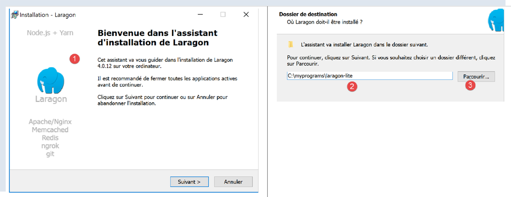
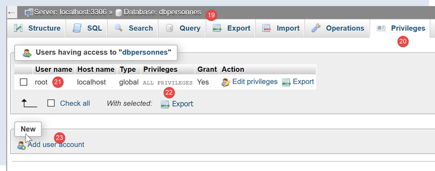
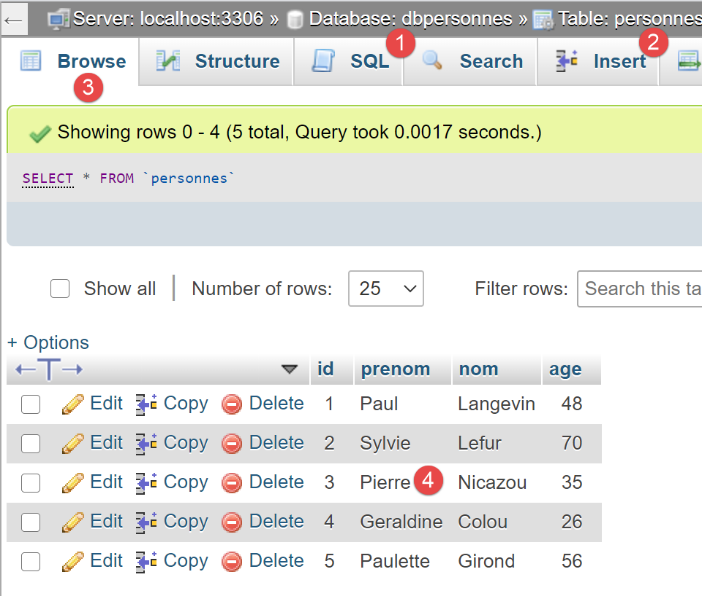

16. Utilisation du SGBD MySQL

16.1. Intallation du SGBD MySQL
Pour disposer du SGBD MySQL, nous allons installer le logiciel Laragon.
16.1.1. Installation de Laragon
Laragon est un package réunissant plusieurs logiciels :
- un serveur web Apache. Nous l'utiliserons pour l'écriture de scripts web en Python ;
- le SGBD MySQL ;
- le langage de script PHP que nous n'utiliserons pas ;
- un serveur Redis implémentant un cache pour des applications web. Nous n'utiliserons ;
Laragon peut être téléchargé (février 2020) à l'adresse suivante :


- l'installation [1-5] donne naissance à l'arborescence suivante :

- en [6] le dossier d'installation de PHP (pas utilisé dans ce document) ;
Le lancement de [Laragon] affiche la fenêtre suivante :

- [1] : le menu principal de Laragon ;
- [2] : le bouton [Start All] lance le serveur web Apache et le SGBD MySQL ;
- [3] : le bouton [WEB] affiche la page web [http://localhost] ;
- [4] : le bouton [Database] permet de gérer le SGBD MySQL avec l’outil [phpMyAdmin]. Il faut auparavant installer celui-ci ;
- [5] : le bouton [Terminal] ouvre un terminal de commandes ;
- [6] : le bouton [Root] ouvre un explorateur Windows positionné sur le dossier [<laragon>/www] qui est la racine du site web [http://localhost]. C’est là qu’il faut placer les applications web statiques gérées par le serveur Apache de Laragon ;
16.1.2. Création d’une base de données
Nous montrons maintenant comment créer une base de données ainsi qu'un utilisateur MySQL avec l’outil Laragon.

- une fois lancé, Laragon [1] peut être administré à partir d'un menu [2] ;
- en [3-5], on installe l'outil [phpMyAdmin] d'administration de MySQL s’il n’a pas déjà été installé ;

- en [6], on démarre le serveur web Apache ainsi que le SGBD MySQL ;
- en [7], le serveur Apache est lancé ;
- en [8], le SGBD MySQL est lancé ;

- en [8-10], on crée une base de données qu’on nomme [dbpersonnes] [11]. On va construire une base de données de personnes ;

- en [11], on va gérer la base de données qu’on vient de créer ;

- l’opération [Bases de données] émet une requête web vers l’URL [http://localhost/phpmyadmin] [12]. C’est le serveur web Apache de Laragon qui répond. L’URL [http://localhost/phpmyadmin] est l’URL de l’utilitaire [phpMyAdmin] que nous avons installé précédemment [5]. Cet utilitaire permet de gérer les bases de données MySQL ;
- par défaut, les identifiants de connexion de l’administrateur de la base sont : root [13] sans mot de passe [14] ;

- en [16], la base de données que nous avons créée précédemment ;

- on a pour l’instant une base [dbpersonnes] [17] qui est vide [18] ;
On crée un utilisateur [admpersonnes] avec le mot de passe [nobody] qui va avoir tous les droits sur la base de données [dbpersonnes] :

- en [19], on est positionnés sur la base [dbpersonnes] ;
- en [20], on sélectionne l’onglet [Privileges] ;
- en [21-22], on voit que l’utilisateur [root] a tous les droits sur la base [dbpersonnes] ;
- en [23], on crée un nouvel utilisateur ;

- en [25-26], l’utilisateur aura l’identifiant [admdbpersonnes] ;
- en [27-29], son mot de passe sera [nobody] ;
- en [30], phpMyAdmin signale que le mot de passe est très faible (facile à craquer). En production, il est préférable de générer un mot de passe fort avec [31] ;
- en [32], on indique que l’utilisateur [admdbpersonnes] doit avoir tous les droits sur la base [dbpersonnes] ;
- en [33], on valide les renseignements donnés ;

- en [35], phpMyAdmin indique que l’utilisateur a été créé ;
- en [36], l’ordre SQL qui a été émis sur la base ;
- en [37], l’utilisateur [admpersonnes] a tous les droits sur la base de données [dbpersonnes] ;
Désormais nous avons :
- une base de données MySQL [dbpersonnes] ;
- un utilisateur [admpersonnes/nobody] qui a tous les droits sur cette base de données ;
16.2. Intallation du package [mysql-connector-python]
Nous allons écrire des scripts Python pour exploiter la base de données créée précédemment avec l'architecture suivante :

Un connecteur sert à isoler le code Python du SGBD exploité. Il existe des connecteurs pour différents SGBD et ceux-ci respectent la même interface. Aussi lorsque ci-dessus, on remplace le SGBD MySQL par le SGBD PostgreSQL, l'architecture devient la suivante :

Parce que tous les connecteurs de SGBD respectent tous la même interface, le script Python n'a normalement pas à être modifié. Dans la réalité, la plupart des SGBD ont un SQL propriétaire :
- ils respectent la norme SQL (Structured Query Language) ;
- mais l'étendent, car elle n'est pas suffisante, avec des extensions du langage propriétaires ;
Aussi, est-il fréquent que lors d'un changement de SGBD il y ait des modifications de SQL à faire dans les scripts.
Nativement, Python n'offre pas la possibilité de gérer une base MySQL. Il faut pour cela télécharger un package. Il en existe plusieurs. Nous allons utiliser ici le package [mysql-connector-python] qui est le connecteur Officiel d'Oracle, l'entreprise qui possède MySQL.
L'installation du package se fera dans une fenêtre [Terminal] de Pycharm :

- le dossier en [2] n'a pas d'importance pour ce qui va suivre ;
Dans le terminal, on tape la commande [pip search MySQL] :
- [pip] (Package Installer for Python) est l'outil d'installation des packages Python. L'outil [pip] se connecte au dépôt contenant les packages Python ;
- [search MySQL] : demande la liste des packages contenant le terme [MySQL] (la casse n'a pas d'importance) dans leur nom ;
Les résultats de la commande sont les suivants :
- mysql (0.0.2) - Virtual package for MySQL-python
- jx-mysql (3.49.20042) - jx-mysql - JSON Expressions for MySQL
- weibo-mysql (0.1) - insert mysql
- bits-mysql (1.0.3) - BITS MySQL
- MySQL-python (1.2.5) - Python interface to MySQL
- deployfish-mysql (0.2.13) - Deployfish MySQL plugin
- mtstat-mysql (0.7.3.3) - MySQL Plugins for mtstat
- bottle-mysql (0.3.1) - MySQL integration for Bottle.
- WintxDriver-MySQL (2.0.0-1) - MySQL support for Wintx
- py-mysql (1.0) - Operating Mysql for Python.
- mysql-utilities (1.4.3) - MySQL Utilities 1.4.3 (part of MySQL Workbench Distribution 6.0.0)
- …. - Tool to move slices of data from one MySQL store to another
- mysql-tracer (2.0.2) - A MySQL client to run queries, write execution reports and export results
- mysql-utils (0.0.2) - A simple MySQL library including a set of utility APIs for Python database programming
- mysql-connector-repackaged (0.3.1) - MySQL driver written in Python
- dffml-source-mysql (0.0.5) - DFFML Source for MySQL Protocol
- mysql-connector-python (8.0.19) - MySQL driver written in Python
- INSTALLED: 8.0.19 (latest)
- prometheus-mysql-exporter (0.2.0) - MySQL query Prometheus exporter
- backwork-backup-mysql (0.3.0) - Backwork plug-in for MySQL backups.
- django-mysql-manager (0.1.4) - django-mysql-manager is a Django based management interface for MySQL users and databases.
- …. - mysql operate
- C:\Data\st-2020\dev\python\cours-2020\v-01>
Ont été listés tous les modules dont le nom ou la description ont le mot clé MySQL. Celui que nous utiliserons (fév 2020) est [mysql-connector-python], ligne 17. Pour l'installer, on tape dans le terminal la commande [pip install -U mysql-connector-python] :
- C:\Data\st-2020\dev\python\cours-2020\v-01>pip install -U mysql-connector-python
- Collecting mysql-connector-python
- Using cached mysql_connector_python-8.0.19-py2.py3-none-any.whl (355 kB)
- Requirement already satisfied, skipping upgrade: protobuf==3.6.1 in c:\myprograms\python38\lib\site-packages (from mysql-connector-python) (3.6.1)
- Requirement already satisfied, skipping upgrade: dnspython==1.16.0 in c:\myprograms\python38\lib\site-packages (from mysql-connector-python) (1.16.0)
- Requirement already satisfied, skipping upgrade: six>=1.9 in c:\users\serge\appdata\roaming\python\python38\site-packages (from protobuf==3.6.1->mysql-connector-python) (1.14.0)
- Requirement already satisfied, skipping upgrade: setuptools in c:\myprograms\python38\lib\site-packages (from protobuf==3.6.1->mysql-connector-python) (41.2.0)
- Installing collected packages: mysql-connector-python
-
Successfully installed mysql-connector-python-8.0.19
-
ligne 1 : l'option [install -U] (U=upgrade) demande la version la plus récente des différents packages associés au package [mysql-connector-python] ;
Pour connaître les packages installés dans l'environnement Python de notre macine, on tape la commande [pip list] :
- C:\Data\st-2020\dev\python\cours-2020\v-01>pip list
- Package Version
- ---------------------- ----------
- asgiref 3.2.3
- astroid 2.3.3
- atomicwrites 1.3.0
- attrs 19.3.0
- certifi 2019.11.28
- …
- MarkupSafe 1.1.1
- mccabe 0.6.1
- more-itertools 8.1.0
- mysql-connector-python 8.0.19
- mysqlclient 1.4.6
- packaging 20.0
- pip 20.0.1
- pipenv 2018.11.26
-
…
-
ligne 13 : on a bien le package [mysql-connector-python] ;
Pour savoir comment utiliser le package [mysql-connector-python] afin de gérer une base de données MySQL, on ira sur le site du package |https://dev.mysql.com/doc/connector-python/en/|. La suite présente une série d'exemples.
16.3. script [mysql_01] : connexion à une base MySQL - 1
Le script [mysql_01] présente la première étape de l'utilisation d'une base de données. Il va nous permettre de vérifier qu'on est capables de se connecter à la base [dbpersonnes] créée précédemment.
- # import du module mysql.connector
- from mysql.connector import connect, DatabaseError, InterfaceError
- # connexion à une base MySql [dbpersonnes]
- # l'identité de l'utilisateur est (admpersonnes,nobody)
- USER = "admpersonnes"
- PWD = "nobody"
- HOST = "localhost"
- DATABASE = "dbpersonnes"
- # c'est parti
- connexion = None
- try:
- print("Connexion au SGBD MySQL en cours...")
- # connexion
- connexion = connect(host=HOST, user=USER, password=PWD, database=DATABASE)
- # suivi
- print(
- f"Connexion MySQL réussie à la base database={DATABASE}, host={HOST} sous l'identité user={USER}, passwd={PWD}")
- except (InterfaceError, DatabaseError) as erreur:
- # on affiche l'erreur
- print(f"L'erreur suivante s'est produite : {erreur}")
- finally:
- # on ferme la connexion si elle a été ouverte
- if connexion:
- connexion.close()
Notes
- ligne 2 : on importe certaines fonctions et classes du module [mysql.connector] ;
- lignes 6-7 : les identifiants de l'utilisateur qui va se connecter ;
- ligne 8 : la machine qui héberge la base de données. En effet, le connecteur MySQL permet de travailler avec une base distante ;
- ligne 9 : le nom de la base de données à laquelle on veut se connecter ;
- lignes 11-26 : le script va connecter (ligne 16) l'utilisateur [admpersonnes / nobody] à la base de données [dbpersonnes] ;
- lignes 20-26 : la connexion peut échouer. Aussi la fait-on dans un try / except / finally ;
-
ligne 16 : la méthode connect du module [mysq.connector] admet différents paramètres nommés :
-
user : utilisateur propriétaire de la connexion [admpersonnes] ;
- password : mot de passe de l'utilisateur [nobody] ;
- host : machine du SGBD MySQL [localhost] ;
-
database : la base de données à laquelle on se connecte. Optionnel.
-
ligne 20 : si une exception est lancée, elle est de type [DatabaseError] ou [InterfaceError] ;
- lignes 23-26 : dans la clause [finally], on ferme la connexion ;
Résultats
- C:\Data\st-2020\dev\python\cours-2020\python3-flask-2020\venv\Scripts\python.exe C:/Data/st-2020/dev/python/cours-2020/python3-flask-2020/databases/mysql/mysql_01.py
- Connexion au SGBD MySQL en cours...
- Connexion MySQL réussie à la base database=dbpersonnes, host=localhost sous l'identité user=admpersonnes, passwd=nobody
- Process finished with exit code 0
16.4. script [mysql_02] : connexion à une base MySQL - 2
Dans ce nouveau script, la connexion à la base est isolée dans une fonction :
- # import du module mysql.connector
- from mysql.connector import DatabaseError, InterfaceError, connect
- # ---------------------------------------------------------------------------------
- def connexion(host: str, database: str, login: str, pwd: str):
- # connecte puis déconnecte (login,pwd) de la base [database] du serveur [host]
- # lance l'exception DatabaseError si problème
- connexion = None
- try:
- # connexion
- connexion = connect(host=host, user=login, password=pwd, database=database)
- print(
- f"Connexion réussie à la base database={database}, host={host} sous l'identité user={login}, passwd={pwd}")
- finally:
- # on ferme la connexion si elle a été ouverte
- if connexion:
- connexion.close()
- print("Déconnexion réussie\n")
- # ---------------------------------------------- main
- # identifiants de la connexion
- USER = "admpersonnes"
- PASSWD = "nobody"
- HOST = "localhost"
- DATABASE = "dbpersonnes"
- # connexion d'un utilisateur existant
- try:
- connexion(host=HOST, login=USER, pwd=PASSWD, database=DATABASE)
- except (InterfaceError, DatabaseError) as erreur:
- # on affiche l'erreur
- print(erreur)
- # connexion d'un utilisateur inexistant
- try:
- connexion(host=HOST, login="xx", pwd="xx", database=DATABASE)
- except (InterfaceError, DatabaseError) as erreur:
- # on affiche l'erreur
- print(erreur)
Notes :
- lignes 6-19 : une fonction [connexion] qui tente de connecter puis de déconnecter un utilisateur à la base de données [dbpersonnes]. Affiche le résultat ;
- lignes 29-41 : programme principal – appelle deux fois la méthode connexion et affiche les éventuelles exceptions ;
Résultats
- C:\Data\st-2020\dev\python\cours-2020\python3-flask-2020\venv\Scripts\python.exe C:/Data/st-2020/dev/python/cours-2020/python3-flask-2020/databases/mysql/mysql_02.py
- Connexion MySQL réussie à la base database=dbpersonnes, host=localhost sous l'identité user=admpersonnes, passwd=nobody
- Déconnexion MySQL réussie
- 1045 (28000): Access denied for user 'xx'@'localhost' (using password: YES)
- Process finished with exit code 0
16.5. script [mysql_03] : création d'une table MySQL
Maintenant qu'on sait créer une connexion avec un SGBD MySQL, on commence à émettre des ordres SQL sur cette connexion. Pour cela, nous allons nous connecter à la base créée [dbpersonnes] et utiliser la connexion pour créer une table dans la base.
- # imports
- import sys
- from mysql.connector import DatabaseError, InterfaceError, connect
- from mysql.connector.connection import MySQLConnection
- # ---------------------------------------------------------------------------------
- def execute_sql(connexion: MySQLConnection, update: str):
- # exécute une requête de mise à jour sur la connexion
- curseur = None
- try:
- # on demande un curseur
- curseur = connexion.cursor()
- # exécute la requête update sur la connexion
- curseur.execute(update)
- finally:
- # fermeture du curseur s'il a été obtenu
- if curseur:
- curseur.close()
- # ---------------------------------------------- main
- # identifiants de la connexion
- # l'identité de l'utilisateur
- ID = "admpersonnes"
- PWD = "nobody"
- # la machine hôte du sgbd
- HOST = "localhost"
- # identité de la base
- DATABASE = "dbpersonnes"
- # on y va étape par étape
- try:
- # connexion
- connexion = connect(host=HOST, user=ID, password=PWD, database=DATABASE)
- # mode AUTOCOMMIT
- connexion.autocommit = True
- except (InterfaceError, DatabaseError) as erreur:
- # on affiche l'erreur
- print(f"L'erreur suivante s'est produite : {erreur}")
- # on quitte
- sys.exit()
- # suppression de la table personnes si elle existe
- # si elle n'existe pas une erreur se produira - on l'ignore
- requête = "drop table personnes"
- try:
- execute_sql(connexion, requête)
- except (InterfaceError, DatabaseError):
- pass
- # création de la table personnes
- requête = "create table personnes (id int PRIMARY KEY, prenom varchar(30) NOT NULL, nom varchar(30) NOT NULL, age integer NOT NULL, " \
- "unique(nom,prenom)) "
- try:
- # exécution requête
- execute_sql(connexion, requête)
- # affichage
- print(f"{requête} : requête réussie")
- except (InterfaceError, DatabaseError) as erreur:
- # on affiche l'erreur
- print(f"L'erreur suivante s'est produite : {erreur}")
- finally:
- # on se déconnecte
- connexion.close()
Notes :
- ligne 9 : la fonction execute_sql exécute une requête SQL sur une connexion ouverte ;
- ligne 14 : les opérations SQL sur la connexion se font au travers d'un objet particulier appelé curseur ;
- ligne 14 : obtention d'un curseur ;
- ligne 16 : exécution de la requête SQL ;
- lignes 17-20 : qu'il y ait erreur ou non, le curseur est fermé. Cela libère les ressources qui lui sont associées. Si exception il y a, alors elle n'est pas gérée ici. Elle va remonter au code appelant ;
- lignes 33-43 : création d'une connexion avec la base de données ;
- ligne 38 : le mode AUTOCOMMIT=True pour une connexion signifie que chaque exécution d'une requête s'exécute dans une transaction automatique. Le mode par défaut est AUTOCOMMIT=False où c'est le développeur qui a la responsabilité de gérer les transactions. Une transaction est un mécanisme qui englobe l'exécution de plusieurs requêtes 1 à n. Soit celles-ci réussissent toutes, soit aucune ne réussit. Ainsi si les requêtes 1 à i réussissent mais que la requête i+1 échoue, alors les requêtes 1 à i vont être 'défaites' pour que la base retrouve l'état qu'elle avait avant l'exécution de la requête 1 ;
- ici, il y a deux requêtes SQL (lignes 49, 58). Elles seront chacune exécutées dans une transaction. Que la seconde échoue n'a aucun impact sur la première ;
- lignes 45-51 : l'ordre SQL [drop table personnes] est exécuté. Elle supprime la table appelée [personnes]. Si celle-ci n'existe pas, une erreur peut être signalée. Celle-ci est ignorée (ligne 51) ;
-
lignes 53-55 : l'ordre de création de la table [personnes]. Une table peut être vue comme un ensemble de lignes et de colonnes. L'ordre de création précise le nom des colonnes :
-
[id] : un identifiant entier. Il sera unique pour chaque personne. Ce sera la clé primaire (PRIMARY KEY). Cela signifie que dans la table, cette colonne n’a pas deux fois la même valeur et qu’elle peut être utilisée pour identifier une personne ;
- [nom] : une chaîne d'au plus 30 caractères ;
- [prenom] : une chaîne d'au plus 30 caractères ;
- [age] : un nombre entier ;
- l'attribut [NOT NULL] pour chacune de ces colonnes signifie que dans une ligne de la table, aucune des trois colonnes ne peut être vide ;
-
le paramètre [unique(nom,prenom)] s'appelle une contrainte. Ici la contrainte sur les lignes est que le tuple (nom, prenom) de la ligne doit être unique dans la table. Cela signifie qu'on peut repérer de façon unique dans la table, un individu dont on connaît les nom et prénom ;
-
lignes 56-60 : exécution de l’ordre SQL ;
- lignes 61-63 : gestion de l’éventuelle exception ;
- lignes 64-66 : on se déconnecte de la base de données ;
Résultats
- C:\Data\st-2020\dev\python\cours-2020\python3-flask-2020\venv\Scripts\python.exe C:/Data/st-2020/dev/python/cours-2020/python3-flask-2020/databases/mysql/mysql_03.py
- create table personnes (id int PRIMARY KEY, prenom varchar(30) NOT NULL, nom varchar(30) NOT NULL, age integer NOT NULL, unique(nom,prenom)) : requête réussie
- Process finished with exit code 0
Vérification avec [phpMyAdmin] :

- la base de données [dbpersonnes] [1] a une table [personnes] [2] qui a la structure [3-4], la clé primaire [5] et la contrainte d’unicité [6] ;
16.6. script [mysql_04] : exécution d'un fichier d'ordres SQL
Après avoir créé précédemment la table [personnes], maintenant nous la remplissons puis l'exploitons à l'aide d'ordres SQL.
Nous souhaitons exécuter les ordres SQL d'un fichier texte :

Le contenu du fichier [commandes.sql] est le suivant :
- # suppression de la table [personnes]
- drop table personnes
- # création de la table personnes
- create table personnes (prenom varchar(30) not null, nom varchar(30) not null, age integer not null, primary key (nom,prenom))
- # insertion de deux personnes
- insert into personnes(prenom, nom, age) values('Paul','Langevin',48)
- insert into personnes(prenom, nom, age) values ('Sylvie','Lefur',70)
- # affichage de la table
- select prenom, nom, age from personnes
- # erreur volontaire
- xx
- # insertion de trois personnes
- insert into personnes(prenom, nom, age) values ('Pierre','Nicazou',35)
- insert into personnes(prenom, nom, age) values ('Geraldine','Colou',26)
- insert into personnes(prenom, nom, age) values ('Paulette','Girond',56)
- # affichage de la table
- select prenom, nom, age from personnes
- # liste des personnes par ordre alphabétique des noms et à nom égal par ordre alphabétique des prénoms
- select nom,prenom from personnes order by nom asc, prenom desc
- # liste des personnes ayant un âge dans l'intervalle [20,40] par ordre décroissant de l'âge
- # puis à âge égal par ordre alphabétique des noms et à nom égal par ordre alphabétique des prénoms
- select nom,prenom,age from personnes where age between 20 and 40 order by age desc, nom asc, prenom asc
- # insertion de mme Bruneau
- insert into personnes(prenom, nom, age) values('Josette','Bruneau',46)
- # mise à jour de son âge
- update personnes set age=47 where nom='Bruneau'
- # liste des personnes ayant Bruneau pour nom
- select nom,prenom,age from personnes where nom='Bruneau'
- # suppression de Mme Bruneau
- delete from personnes where nom='Bruneau'
- # liste des personnes ayant Bruneau pour nom
- select nom,prenom,age from personnes where nom='Bruneau'
Nous définissons tout d'abord des fonctions que nous installons dans un module afin de pouvoir les réutiliser :

Le script [mysql_module] est le suivant :
- # imports
- from mysql.connector import DatabaseError, InterfaceError
- from mysql.connector.connection import MySQLConnection
- from mysql.connector.cursor import MySQLCursor
- # ---------------------------------------------------------------------------------
- def afficher_infos(curseur: MySQLCursor):
- # affiche le résultat d'une command sql
- …
- # ---------------------------------------------------------------------------------
- def execute_list_of_commands(connexion: MySQLConnection, sql_commands: list,
- suivi: bool = False, arrêt: bool = True, with_transaction: bool = True):
- # utilise la connexion ouverte [connexion]
- # exécute sur cette connexion les commandes SQL contenues dans la liste [sql_commands]
- # ce fichier est un fichier de commandes SQL à exécuter à raison d'une par ligne
- # si suivi=True alors chaque exécution d'un ordre SQL fait l'objet d'un affichage indiquant sa réussite ou son échec
- # si arrêt=True, la fonction s'arrête sur la 1ère erreur rencontrée sinon elle exécute ttes les commandes sql
- # si with_transaction=True alors toute erreur annule l'ensemble des ordres SQL exécutés auparavant
- # si with_transaction=False alors une erreur n'a aucun impact sur les ordres SQL exécutés auparavant
- # la fonction rend une liste [erreur1, erreur2, ...]
- ….
- # ---------------------------------------------------------------------------------
- def execute_file_of_commands(connexion: MySQLConnection, sql_filename: str,
- suivi: bool = False, arrêt: bool = True, with_transaction: bool = True):
- # utilise la connexion ouverte [connexion]
- # exécute sur cette connexion les commandes SQL contenues dans le fichier texte sql_filename
- # ce fichier est un fichier de commandes SQL à exécuter à raison d'une par ligne
- # si suivi=True alors chaque exécution d'un ordre SQL fait l'objet d'un affichage indiquant sa réussite ou son échec
- # si arrêt=True, la fonction s'arrête sur la 1ère erreur rencontrée sinon elle exécute ttes les commandes sql
- # si with_transaction=True alors toute erreur annule l'ensemble des ordres SQL exécutés auparavant
- # si with_transaction=False alors une erreur n'a aucun impact sur les ordres SQL exécutés auparavant
- # la fonction rend une liste [erreur1, erreur2, ...]
- # exploitation du fichier SQL
- try:
- # ouverture du fichier en lecture
- file = open(sql_filename, "r")
- # exploitation
- return execute_list_of_commands(connexion, file.readlines(), suivi, arrêt, with_transaction)
- except BaseException as erreur:
- # on rend un tableau d'erreurs
- return [f"Le fichier {sql_filename} n'a pu être être exploité : {erreur}"]
Notes :
- ligne 29 : la fonction [execute_file_of_commands] exécute les ordres SQL contenu dans le fichier texte nommé [sql_filename] :
- on lira les commentaires des lignes 31-38 pour connaître la signification des paramètres ;
- lignes 40-48 : on exploite le fichier texte [sql_filename] ;
- ligne 43 : ouverture du fichier ;
- ligne 34 : exécution de la fonction [execute_list_of_commands] qui exécute les commandes SQL qu'on lui passe dans une liste. Cette liste est ici constituée par la liste de toutes les lignes du fichier texte [file.readlines()] (ligne 45) ;
La fonction [execute_list_of_commands] est la suivante :
- # ---------------------------------------------------------------------------------
- def execute_list_of_commands(connexion: MySQLConnection, sql_commands: list,
- suivi: bool = False, arrêt: bool = True, with_transaction: bool = True):
- # utilise la connexion ouverte [connexion]
- # exécute sur cette connexion les commandes SQL contenues dans la liste [sql_commands]
- # ce fichier est un fichier de commandes SQL à exécuter à raison d'une par ligne
- # si suivi=True alors chaque exécution d'un ordre SQL fait l'objet d'un affichage indiquant sa réussite ou son échec
- # si arrêt=True, la fonction s'arrête sur la 1ère erreur rencontrée sinon elle exécute ttes les commandes sql
- # si with_transaction=True alors toute erreur annule l'ensemble des ordres SQL exécutés auparavant
- # si with_transaction=False alors une erreur n'a aucun impact sur les ordres SQL exécutés auparavant
- # la fonction rend une liste [erreur1, erreur2, ...]
- # initialisations
- curseur = None
- connexion.autocommit = not with_transaction
- erreurs = []
- try:
- # on demande un curseur
- curseur = connexion.cursor()
- # exécution des sql_commands SQL contenues dans sql_commands
- # on les exécute une à une
- for command in sql_commands:
- # on élimine les blancs de début et de fin de la commande courante
- command = command.strip()
- # a-t-on une commande vide ou un commentaire ? Si oui, on passe à la commande suivante
- if command == '' or command[0] == "#":
- continue
- # exécution de la commande courante
- error = None
- try:
- curseur.execute(command)
- except (InterfaceError, DatabaseError) as erreur:
- error = erreur
- # y-a-t-il eu une erreur ?
- if error:
- # une erreur de plus
- msg = f"{command} : Erreur ({error})"
- erreurs.append(msg)
- # suivi écran ou non ?
- if suivi:
- print(msg)
- # on s'arrête ?
- if with_transaction or arrêt:
- # on rend la liste d'erreurs
- return erreurs
- else:
- # pas d'erreur
- if suivi:
- print(f"[{command}] : Exécution réussie")
- # on affiche le résultat de la command
- afficher_infos(curseur)
- # on rend le tableau des erreurs
- return erreurs
- finally:
- # fermeture du curseur
- if curseur:
- curseur.close()
- # on valide / annule la transaction si elle existe
- if with_transaction:
- if erreurs:
- # annulation
- connexion.rollback()
- else:
- # validation
- connexion.commit()
Notes
- ligne 2 : la fonction [execute_list_of_commands] exécute les ordres SQL contenu dans la liste [sql_commands] :
- on lira les commentaires des lignes 4-11 pour connaître la signification des paramètres ;
- ligne 2 : la connexion reçue est une connexion ouverte vers une base de données ;
- ligne 15 : si on veut que l'ensemble des commandes de la liste [sql_commands] s'exécute au sein d'une transaction alors il faut travailler en mode AUTOCOMMIT=False. Sinon, on travaillera en mode AUTOCOMMIT=True et alors chacune des commandes de la liste [sqlCommands] s'exécutera au sein d'une transaction automatique et il n'y aura pas de transaction globale ;
- ligne 19 : on demande un curseur pour exécuter les différentes commandes SQL ;
- lignes 22-51 : on exécute les commandes une par une ;
- lignes 26-27 : on accepte les lignes blanches ainsi que les commentaires dans la liste des commandes SQL. Dans ce cas, on ignore simplement la commande ;
- lignes 30-33 : exécution de la requête courante ;
- lignes 35-45 : on traite le cas d'une éventuelle erreur d'exécution de la requête courante ;
- lignes 37-38 : l'erreur est ajoutée au tableau des erreurs ;
- lignes 40-41 : si un suivi a été demandé, alors le message d'erreur est affiché ;
- lignes 43-45 : si le code appelant a demandé un arrêt après la première erreur ou s'il a demandé l'utilisation d'une transaction, alors il faut s'arrêter. On rend le tableau des erreurs ;
- lignes 46-51 : cas où il n'y a pas eu d'erreur d'exécution de la requête courante ;
- lignes 48-49 : si un suivi a été demandé, on affiche la requête exécutée avec la mention 'réussie' ;
- lignes 50-51 : on affiche le résultat de la requête exécutée. On va revenir sur la fonction [afficher_infos] un peu plus loin ;
- lignes 54-65 : la clause [finally] est exécutée dans tous les cas, qu'il y ait eu une exception ou pas ;
- lignes 56-57 : fermeture du curseur. Cela libère les ressources allouées à celui-ci ;
- lignes 59-65 : on traite le cas où le code appelant a demandé à ce que les commandes SQL soient exécutées dans une transaction ;
- ligne 60 : on regarde si la liste [erreurs] est vide, ce qui signifie qu'aucune exception n'a eu lieu. Dans ce cas, la transaction est validée (ligne 65), sinon elle est annulée (ligne 62) ;
La fonction [afficher_infos] affiche le résultat d'une requête :
- # ---------------------------------------------------------------------------------
- def afficher_infos(curseur: MySQLCursor):
- print(type(curseur))
- # affiche le résultat d'une command sql
- # s'agissait-il d'un select ?
- if curseur.description:
- # le curseur a une description - donc il a exécuté un select
- # description[i] est la description de la colonne n° i du select
- # description[i][0] est le nom de la colonne n° i du select
- # on affiche les noms des champs
- titre = ""
- for i in range(len(curseur.description)):
- titre += curseur.description[i][0] + ", "
- # on affiche la liste des champs sans la virgule de fin
- print(titre[0:len(titre) - 1])
- # ligne séparatrice
- print("*" * (len(titre) - 1))
- # ligne courante du select
- ligne = curseur.fetchone()
- while ligne:
- # on l'affiche
- print(ligne)
- # ligne suivante du select
- ligne = curseur.fetchone()
- # ligne séparatrice
- print("*" * (len(titre) - 1))
- else:
- # le curseur n'a pas de champ [description] - il a donc exécuté un ordre SQL
- # de mise à jour (insert, delete, update)
- print(f"nombre de lignes modifiées : {curseur.rowcount}")
Notes
- ligne 1 : le paramètre de la fonction est le curseur qui vient d'exécuter un ordre SQL. Selon que cet ordre est un SELECT ou un ordre de mise à jour INSERT, UPDATE, DELETE, le contenu du curseur n'est pas le même ;
-
ligne 6 : si le curseur a le champ [description] alors il a exécuté un SELECT et [description] décrit les champs demandés dans le SELECT :
-
description[i] décrit le champ n° i demandé par le SELECT. C'est une liste ;
-
description[i][0] est le nom du champ n° i ;
-
lignes 11-17 : on affiche le nom des champs demandés par le SELECT ;
- lignes 18-24 : on exploite le résultat du SELECT ;
- lignes 20, 24 : le résultat d'un SELECT s'exploite séquentiellement. Ce résultat est un ensemble de lignes. La ligne courante est obtenue par [curseur.fetchone()] (ligne 19). On obtient alors un tuple ;
- lignes 27-30 : si le curseur n'a pas le champ [description] alors il a exécuté un ordre de mise à jour INSERT, UPDATE, DELETE. On peut alors savoir combien de lignes de la table ont été modifiées par l'exécution de cet ordre ;
- ligne 30 : [curseur.rowcount] est ce nombre ;
Le script principal [mysql-04] utilise le module [mysql_module] que nous venons de décrire :

Le fichier [config_04] configure le contexte d’exécution du script [mysql_04] :
- def configure():
- import os
- # chemin absolu du dossier du fichier de configuration
- script_dir = os.path.dirname(os.path.abspath(__file__))
- # configuration des dossiers du syspath
- absolute_dependencies = [
- ** **# dossiers locaux
- ** *f"{script_dir}/shared",*
- ** ]**
- # fixation du syspath
- from myutils import set_syspath
- set_syspath(absolute_dependencies)
- # on rend la config
- return {
- # fichier des commandes SQL
- "commands_filename": f"{script_dir}/data/commandes.sql",
- # identifiants de la connexion à la base de données
- "host": "localhost",
- "database": "dbpersonnes",
- "user": "admpersonnes",
- "password": "nobody"
- }
Le script [mysql_04] est le suivant :
- # on récupère la configuration de l'application
- import config_04
- config = config_04.configure()
- # le syspath est configuré - on peut faire les imports
- import sys
- from mysql_module import execute_file_of_commands
- from mysql.connector import connect, DatabaseError, InterfaceError
- # ---------------------------------------------- main
- # vérification de la syntaxe de l'appel
- # argv[0] true / false
- args = sys.argv
- erreur = len(args) != 2
- if not erreur:
- with_transaction = args[1].lower()
- erreur = with_transaction != "true" and with_transaction != "false"
- # erreur ?
- if erreur:
- print(f"syntaxe : {args[0]} true / false")
- sys.exit()
- # calcul d'un texte
- with_transaction = with_transaction == "true"
- if with_transaction:
- texte = "avec transaction"
- else:
- texte = "sans transaction"
- # logs écran
- print("--------------------------------------------------------------------")
- print(f"Exécution du fichier SQL {config['commands_filename']} {texte}")
- print("--------------------------------------------------------------------")
- # exécution des ordres SQL du fichier
- connexion = None
- try:
- # connexion à la bd
- connexion = connect(host=config['host'], user=config['user'], password=config['password'],
- database=config['database'])
- # exécution du fichier des commandes SQL
- erreurs = execute_file_of_commands(connexion, config["commands_filename"], suivi=True, arrêt=False,
- with_transaction=with_transaction)
- except (InterfaceError, DatabaseError) as erreur:
- # affichage de l'erreur
- print(f"L'erreur fatale suivante s'est produite : {erreur}")
- # on s'arrête
- sys.exit()
- finally:
- # fermeture de la connexion si elle a été ouverte
- if connexion:
- connexion.close()
- # affichage nombre d'erreurs
- print("--------------------------------------------------------------------")
- print(f"Exécution terminée")
- print("--------------------------------------------------------------------")
- print(f"Il y a eu {len(erreurs)} erreur(s)")
- # affichage des erreurs
- for erreur in erreurs:
- print(erreur)
Notes
- lignes 1-4 : configuration du script ;
- ligne 8 : import du module [mysql_module] décrit précédemment :
- lignes 12-22 : le script [mysql-04] attend un paramètre qui doit avoir l'une des valeurs [true / false]. Ce paramètre indique si le fichier d'ordres SQL doit être exécuté au sein d'une transaction (true) ou pas (false) ;
- ligne 14 : les paramètres passés par l'utilisateur au script sont trouvés dans la liste [sys.argv] ;
- ligne 15 : il faut deux paramètres, par exemple [mysql-04 true]. Le nom du script compte comme un paramètre ;
- lignes 17-18 : s'il y a bien deux paramètres, il faut que le 2e soit une chaîne de caractères de valeur 'true' ou 'false' ;
- lignes 24-29 : calcul d'un texte affiché ligne 33 ;
- lignes 39-44 : on exécute les commandes du fichier [./data/commandes.sql] ;
- lignes 45-49 : s’il se produit une erreur à la connexion (ligne 40) ou non gérée par le script [execute_file_of_commands] on affiche l’erreur et on arrête tout ;
- lignes 55-62 : en cas d’exécution réussie, on affiche le nombre d’erreurs rencontrées dans l’exécution des commandes SQL ;
Exécution n° 1
On fait d'abord une exécution sans transaction. Pour cela, on va créer une configuration d'exécution comme il a été fait dans le paragraphe |configuration d’un contexte d’exécution|:

- en [1-4], on crée une configuration d'exécution Python ;

- [5] : nom de la configuration d'xécution ;
- [6] : chemin du script à exécuter ;
- [7] : paramètres du script ;
- [8] : dossier d’exécution ;
Cette configuration correspond donc à une exécution du fichier SQL avec une transaction. Utiliser le bouton [Apply] pour valider la configuration.
Nous créons de la même façon la configuration d'exécution [mysql mysql-04 without_transaction] :

Cette configuration correspond donc à une exécution du fichier SQL sans transaction. Utiliser le bouton [Apply] pour valider la configuration.
Nous exécutons d'abord la version sans transaction :

Les résultats sont alors les suivants :
- C:\Data\st-2020\dev\python\cours-2020\python3-flask-2020\venv\Scripts\python.exe C:/Data/st-2020/dev/python/cours-2020/python3-flask-2020/databases/mysql/mysql_04.py false
- --------------------------------------------------------------------
- Exécution du fichier SQL C:\Data\st-2020\dev\python\cours-2020\python3-flask-2020\databases\mysql/data/commandes.sql sans transaction
- --------------------------------------------------------------------
- [drop table personnes] : Exécution réussie
- nombre de lignes modifiées : 0
- [create table personnes (id int primary key, prenom varchar(30) not null, nom varchar(30) not null, age integer not null, unique (nom,prenom))] : Exécution réussie
- nombre de lignes modifiées : 0
- [insert into personnes(id, prenom, nom, age) values(1, 'Paul','Langevin',48)] : Exécution réussie
- nombre de lignes modifiées : 1
- [insert into personnes(id, prenom, nom, age) values (2, 'Sylvie','Lefur',70)] : Exécution réussie
- nombre de lignes modifiées : 1
- [select prenom, nom, age from personnes] : Exécution réussie
- prenom, nom, age,
- *****************
- ('Paul', 'Langevin', 48)
- ('Sylvie', 'Lefur', 70)
- *****************
- xx : Erreur (1064 (42000): You have an error in your SQL syntax; check the manual that corresponds to your MySQL server version for the right syntax to use near 'xx' at line 1)
- [insert into personnes(id, prenom, nom, age) values (3, 'Pierre','Nicazou',35)] : Exécution réussie
- nombre de lignes modifiées : 1
- [insert into personnes(id, prenom, nom, age) values (4, 'Geraldine','Colou',26)] : Exécution réussie
- nombre de lignes modifiées : 1
- [insert into personnes(id, prenom, nom, age) values (5, 'Paulette','Girond',56)] : Exécution réussie
- nombre de lignes modifiées : 1
- [select prenom, nom, age from personnes] : Exécution réussie
- prenom, nom, age,
- *****************
- ('Paul', 'Langevin', 48)
- ('Sylvie', 'Lefur', 70)
- ('Pierre', 'Nicazou', 35)
- ('Geraldine', 'Colou', 26)
- ('Paulette', 'Girond', 56)
- *****************
- [select nom,prenom from personnes order by nom asc, prenom desc] : Exécution réussie
- nom, prenom,
- ************
- ('Colou', 'Geraldine')
- ('Girond', 'Paulette')
- ('Langevin', 'Paul')
- ('Lefur', 'Sylvie')
- ('Nicazou', 'Pierre')
- ************
- [select nom,prenom,age from personnes where age between 20 and 40 order by age desc, nom asc, prenom asc] : Exécution réussie
- nom, prenom, age,
- *****************
- ('Nicazou', 'Pierre', 35)
- ('Colou', 'Geraldine', 26)
- *****************
- [insert into personnes(id, prenom, nom, age) values(6, 'Josette','Bruneau',46)] : Exécution réussie
- nombre de lignes modifiées : 1
- [update personnes set age=47 where nom='Bruneau'] : Exécution réussie
- nombre de lignes modifiées : 1
- [select nom,prenom,age from personnes where nom='Bruneau'] : Exécution réussie
- nom, prenom, age,
- *****************
- ('Bruneau', 'Josette', 47)
- *****************
- [delete from personnes where nom='Bruneau'] : Exécution réussie
- nombre de lignes modifiées : 1
- [select nom,prenom,age from personnes where nom='Bruneau'] : Exécution réussie
- nom, prenom, age,
- *****************
- *****************
- --------------------------------------------------------------------
- Exécution terminée
- --------------------------------------------------------------------
- Il y a eu 1 erreur(s)
- xx : Erreur (1064 (42000): You have an error in your SQL syntax; check the manual that corresponds to your MySQL server version for the right syntax to use near 'xx' at line 1)
- Process finished with exit code 0
Notes :
- ligne 19 : on voit qu'après l'erreur l'exécution des ordres SQL a continué, ceci parce que l'exécution s'est faite sans transaction et avec le paramètre [arrêt=False]. Tous les ordres SQL ont donc été exécutés. On devrait donc avoir une table [personnes] reflétant cette exécution ;
Vérification avec phpMyAdmin :

Exécution n° 2
Nous exécutons maintenant la configuration [mysql mysql-04 with_transaction]. Les résultats sont les suivants :
- C:\Data\st-2020\dev\python\cours-2020\python3-flask-2020\venv\Scripts\python.exe C:/Data/st-2020/dev/python/cours-2020/python3-flask-2020/databases/mysql/mysql_04.py true
- --------------------------------------------------------------------
- Exécution du fichier SQL C:\Data\st-2020\dev\python\cours-2020\python3-flask-2020\databases\mysql/data/commandes.sql avec transaction
- --------------------------------------------------------------------
- [drop table personnes] : Exécution réussie
- nombre de lignes modifiées : 0
- [create table personnes (id int primary key, prenom varchar(30) not null, nom varchar(30) not null, age integer not null, unique (nom,prenom))] : Exécution réussie
- nombre de lignes modifiées : 0
- [insert into personnes(id, prenom, nom, age) values(1, 'Paul','Langevin',48)] : Exécution réussie
- nombre de lignes modifiées : 1
- [insert into personnes(id, prenom, nom, age) values (2, 'Sylvie','Lefur',70)] : Exécution réussie
- nombre de lignes modifiées : 1
- [select prenom, nom, age from personnes] : Exécution réussie
- prenom, nom, age,
- *****************
- ('Paul', 'Langevin', 48)
- ('Sylvie', 'Lefur', 70)
- *****************
- xx : Erreur (1064 (42000): You have an error in your SQL syntax; check the manual that corresponds to your MySQL server version for the right syntax to use near 'xx' at line 1)
- --------------------------------------------------------------------
- Exécution terminée
- --------------------------------------------------------------------
- Il y a eu 1 erreur(s)
- xx : Erreur (1064 (42000): You have an error in your SQL syntax; check the manual that corresponds to your MySQL server version for the right syntax to use near 'xx' at line 1)
- Process finished with exit code 0
Notes :
- ligne 19 : on voit qu'après l'erreur il n'y a plus d'exécution d'ordres SQL, ceci parce que l'exécution s'est faite dans une transaction et qu'à la 1re erreur rencontrée nous avons défait la transaction et arrêté l'exécution des ordres SQL. Ceci signifie que le résultat des ordres des lignes 9, 11, 13 a été défait. On devrait donc avoir une table [personnes] vide ;
Vérifications avec phpMyAdmin :

- en [5], on voit que la table [personnes] [2] est vide ;
16.7. script [mysql_05] : utilisation de requêtes paramétrées
Le script [mysql_05] introduit la notion de requêtes paramétrées :
- # imports
- from mysql.connector import connect, DatabaseError, InterfaceError
- # l'identité de l'utilisateur
- ID = "admpersonnes"
- PWD = "nobody"
- # la machine hôte du sgbd
- HOST = "localhost"
- # identité de la base
- BASE = "dbpersonnes"
- # liste de personnes (nom,prenom,age)
- personnes = []
- for i in range(5):
- personnes.append((i, f"n0{i}", f"p0{i}", i + 10))
- personnes.append((40, "d'Aboot", "Y'éna", 18))
- # autre liste de personnes
- autresPersonnes = []
- for i in range(5):
- autresPersonnes.append((i + 100, f"n1{i}", f"p1{i}", i + 20))
- autresPersonnes.append((200, "d'Aboot", "F'ilhem", 34))
- # accès au SGBD
- connexion = None
- try:
- # connexion
- connexion = connect(host=HOST, user=ID, password=PWD, database=BASE)
- # curseur
- curseur = connexion.cursor()
- # suppression des enregistrement existants
- curseur.execute("delete from personnes")
- # insertions personne par personne avec une requête préparée
- for personne in personnes:
- curseur.execute("insert into personnes(id,nom,prenom,age) values(%s,%s,%s,%s)", personne)
- # insertion en bloc d'une liste de personnes
- curseur.executemany("insert into personnes(id,nom,prenom,age) values(%s, %s,%s,%s)", autresPersonnes)
- # validation de la transaction
- connexion.commit()
- except (DatabaseError, InterfaceError) as erreur:
- # affichage erreur
- print(f"L'erreur suivante s'est produite : {erreur}")
- # annulation transaction
- if connexion:
- connexion.rollback()
- finally:
- # fermeture connexion
- if connexion:
- connexion.close()
Notes
- lignes 12-21 : on crée deux listes de personnes à inclure dans la base de données [dbpersonnes] ;
- ligne 27 : connexion à la base de données ;
- ligne 31 : suppression du contenu de la table [personnes] ;
- lignes 33-34 : insertion de personnes avec une requête paramétrée. Ligne 34, le 1er paramètre est l'ordre SQL à exécuter. Celui-ci est incomplet. Il contient des paramètres [%s] qui vont être remplacés un par un et dans l'ordre par les valeurs de la liste du second paramètre ;
- ligne 36 : insertion de personnes avec cette fois une seule instruction [curseur.executemany]. Le second paramètre de [executemany] est alors une liste de listes ;
L'intérêt des requêtes paramétrées réside en deux points :
- elles sont exécutées plus rapidement que des requêtes en 'dur' qu'il faut analyser à chaque exécution. La requête paramétrée [executemany] n'est analysée qu'une fois. Ensuite elle est exécutée n fois sans être analysée de nouveau ;
- les paramètres injectés dans la requête paramétrée sont vérifiés. S'ils contiennent des caractères réservés, comme l'apostrophe par exemple, ceux-ci sont 'protégés' afin qu'ils n'interfèrent pas dans l'exécution de l'ordre SQL. C’est pour vérifier ce point qu’on a inclus des noms et prénoms avec apostrophes dans la liste (lignes 16 et 21) ;
Les résultats obtenus dans phpMyAdmin sont les suivants :

- on notera que les chaînes ayant une apostrophe, caractère réservé en SQL, ont été correctement insérées. La requête paramétrée les a 'protégées'. Sans requête paramétrée, il aurait fallu faire ce travail nous-mêmes ;